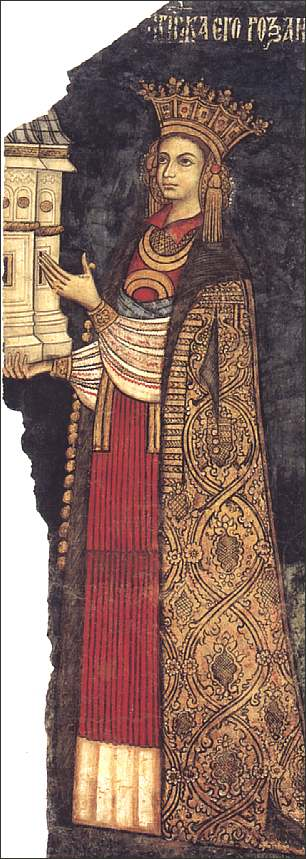

The National Museum
of Art of Romania
The Curtea de Arges Cathedral
and the Princess Roxanda


The National Museum of Art of Romania re-opened
recently, so I took advantage of my trip to Bucharest for pay a visit
to the museum. From the Department of
Medieval Art I have chosen to show you on this page a fresco fragment of the master Dobromir
from Targoviste, painted in 1526. The fragment was taken from the
cathedral in Curtea de Arges (read Arjesh) and shows one of the
founders' portraits, originally located in the pronaos. The fragment
was detached in 1881 - 1886, during a restoration.
The Curtea de Arges cathedral and monastery is
the place where many princes and kings of Romania are buried. The
fresco on the stamp above, displayed on the left, shows the
Walachian prince Neagoe Basarab, the initial founder of the
cathedral and the first prince who was buried there, in 1521. The
cathedral was sanctificated by Patriarch Teolipt I of
Constantinopole, who created an ecumenical center at this seat
(after N. Iorga). The fresco showing the Prince Basarab is situated
in the cathedral itself. The stamp shown below on the left,
dedicated to the 475th anniversary of the monastery, presents also
the Prince Neagoe Basarab and his wife, the Princess Despina Militza.
The Curtea de Arges cathedral appeared several times on
the Romanian stamps, so I have the privilege to show many of them
throughout this page. Unfortunately the fresco of Princess Roxanda hasn't appeared on
a stamp yet, but it is so interesting that I have put it
on this page too, in the hope that this wonderful work of art will be one day
shown by the Romanian post.
Princess Roxanda's portrait is part of the votive scene which make the
completion of the painting found previously in the Curtea de Arges cathedral. It
was there paired with the painting of her husband, the Prince Radu de
la Afumati.
|



The votive painting in the pronaos of the cathedral
in Curtea de Arges fully reveal the atmosphere at the court of Neagoe
Basarab (see again the stamp on top, on the left side), a prince whose strong
personality influenced the south-eastern Christian orthodox
civilization at the beginning of the sixteen century. (After Marina
Sabados).
The
different stamps displayed above show the Curtea de Arges cathedral. Please move the
mouse pointer over the stamps for more information.
| Published:
06/09/2001. Revised: 08/06/01. Copyright © 2001 by Victor Manta, Switzerland. All rights reserved worldwide. |